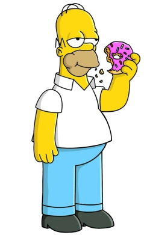
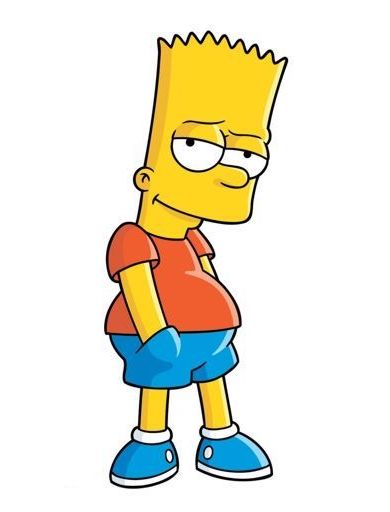
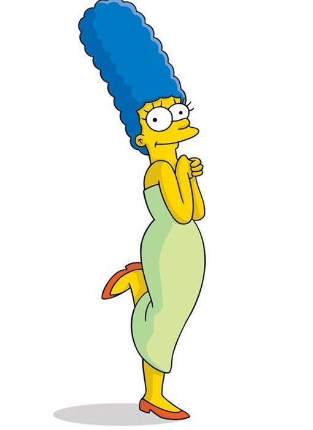
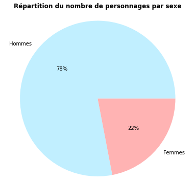
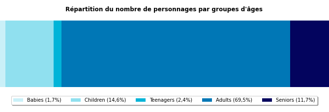
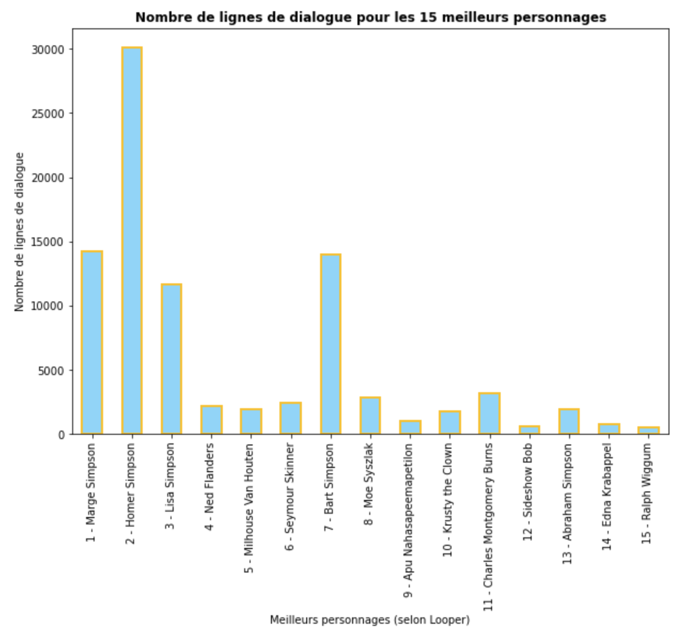
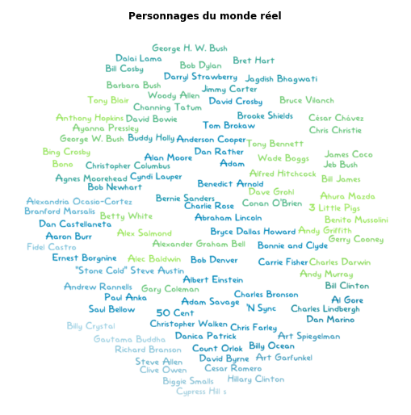

Les personnages
La série regorge de personnages tous plus iconiques les uns que les autres. Découvrons-en plus sur eux !
Les personnages au coeur des storylines
Nous avons analysé le nombre d'occurrences des prénoms des membres de la famille Simpson dans les titres et résumés d'épisodes.
| Personnage | Nom | Nombre d'occurrences dans les titres | Nombre d'occurrences dans les résumés |
|---|---|---|---|
|  | Homer | 56 | 407 |
|  | Bart | 48 | 260 |
 |
Lisa | 42 | 205 |
|  | Marge | 23 | 181 |
 |
Maggie | 3 | 25 |
On constate que les storylines sont surtout centrées sur Homer. Bart arrive en second, suivi de près par Lisa. Marge est relativement en retrait. Maggie semble plutôt être un personnage secondaire (après tout, ce n'est qu'un bébé !).
Analyse demographique par sexe
Nous avons accès à une liste de 6722 personnages. Nous connaissons le sexe de 323 d'entre eux.
Parmi les personnages dont on connaît le sexe, plus des trois quarts sont des hommes.
Analyse demographique par groupe d'ages
Grâce à Simpsons Wiki, nous avons récupéré une liste de 3700 personnages classés par groupe d'âges : bébés, enfants, adolescents, adultes et seniors. 439 personnages appartiennent à plusieurs catégories, soit parce qu'ils apparaissent à différentes périodes de leur vie dans la série, soit parce qu'ils sont à cheval entre deux groupes d'âges.
70% des personnages sont des adultes. Les autres groupes d'âges les plus représentés sont les enfants (15%) et les seniors (12%).
Les mineurs représentent environ 19% des personnages. Cela est proche de la démographie des États-Unis : selon le Census Bureau, 22% des habitants avaient moins de 18 ans en 2020.
Les personnages les plus bavards
Nous avons à notre disposition le nombre de lignes de dialogue prononcées par chaque personnage (jusqu'à l'épisode 16 de la saison 26).
Nous avons modélisé ces données grâce à un nuage de mots.
Nous avons extrait un classement des personnages depuis un article du site Looper. Nous avons ensuite représenté le nombre de lignes de dialogue des quinze meilleurs personnages.
En raison de la nature hautement subjective du classement, nous ne pouvons pas nous avancer à établir des corrélations.
Les personnages du monde reel
Les Simpson s'inspirent beaucoup de notre monde et n'hésitent pas à mettre en scène des personnes existant ou ayant existé.
